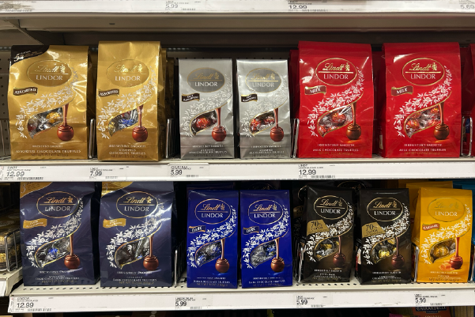
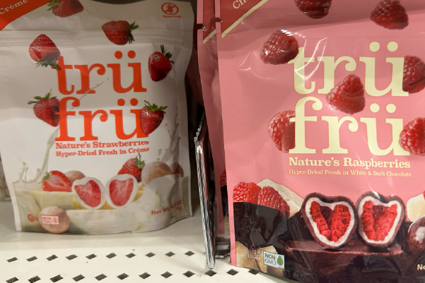

LARGE VARIETY
ALISA UTESHEVA | 03.07.25
I walked into Target and went straight to the candy aisle to take pictures for this project. I was amazed by the huge variety—Target really has so many options. Look at how many different versions of the same candy there are! This is Lindor chocolate, one of my favorites. I know many people who dislike this brand, but I don't mind. I love these chocolates.

It's the packaging that draws me in. I love the wrapping and the variety of flavors it offers. My favorite is the dark chocolate, since the milk chocolate in this brand tastes really bland. Usually in other brands I prefer milk chocolate.
box
HEALTHY ALTERNATIVES
ALISA UTESHEVA | 03.07.25
I've always preferred the taste of natural flavors. When I eat overly processed foods, I enjoy them for a short while, but eventually, I start feeling ill and can't eat anything sweet for a while. However, these are different. They're freeze dried fruits, which is my favorite, and they're dipped in chocolate.
